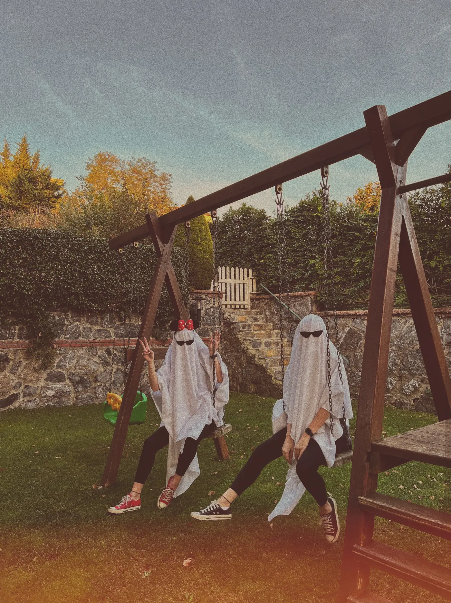
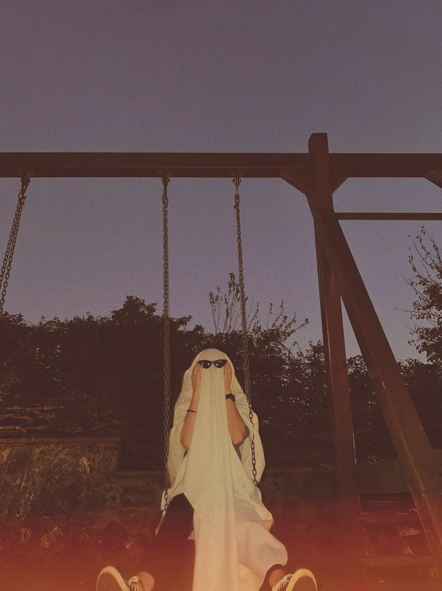
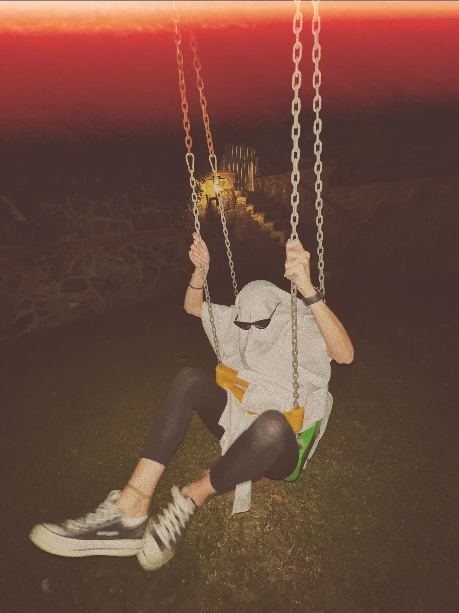
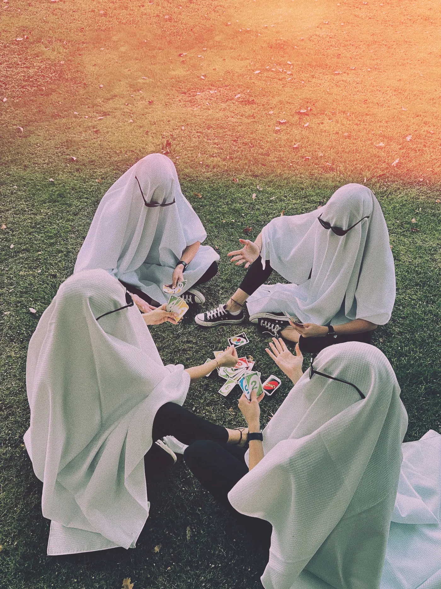

What is a ghost photoshoot?
It is a viral photo trend where people dress as old-fashioned bedsheet ghosts and pose in everyday places. It took off on TikTok in September 2020 and comes back every autumn.
The trend is usually traced to TikTok posts set to Jack Stauber's song "Oh Klahoma". The sunglasses arrived soon after and stuck, and by 2023 it had returned as a Halloween staple, with pets joining in too.
Why does it work so well? Nobody needs to be photogenic, because nobody's face is showing. There is no costume to buy. And a ghost on a playground slide is funny in a way a normal photo on a slide is not.
What do you need for a ghost photoshoot?
A white flat sheet for each person, sunglasses, your own shoes, a phone and a friend. If you want it to look like the classic version, that is the whole list.
- A white flat sheet. Flat rather than fitted, and thin enough to breathe through. A slightly wrinkled one looks better than a perfectly ironed one.
- Sunglasses. Retro or cat-eye shapes look great. Rest them on the sheet where your eyes would be, and a hair tie or small safety pin can hold them.
- Sneakers you like. They are the only "you" that shows, so red or chunky ones make the picture. Look at the shoes below.
- A cap under the sheet (optional). It gives you a rounder, cleaner head shape.
- A second person. Ghosts can't see much. A friend takes the photos and stops you walking into things.
Want the exact sheet sizes and how to cut eye holes? See how to make a sheet ghost costume.


Where and when should you shoot?
Shoot at golden hour or dusk, somewhere with one strong prop: a swing, a slide, a bench, a field or an empty road. The more normal the location, the funnier the ghost.
- Playgrounds: swings, slides and seesaws work well, because grown ghosts on small equipment are funny on sight. Go when children aren't using them.
- Gardens and fields: autumn leaves give you colour for free.
- Everyday places: a bus stop, a café table, a laundrette or a supermarket car park. Ask first anywhere private.
About time of day: the 30 minutes around sunset give you warm light on the sheet and colour in the sky. Just after sunset, a white sheet glows against a blue sky. At full night, use flash for a harsh, disposable-camera look. Try all three, because the sheet behaves differently in each.


What are good ghost photoshoot poses?
Do normal human things, without any spooky acting. Avoid the "boo" pose: a ghost who is bored, shrugging or checking their phone is much funnier.
- The shrug. Palms up, sheet hanging from the arms.
- The swing. Shoot low, with your sneakers towards the camera.
- The slide. Sit at the bottom as if you have been waiting a while.
- The seesaw. Two ghosts, one up and one down.
- The card game. Several ghosts in a circle on the grass, shot from above.
- The walk away. From behind, down an empty path.
- The coffee. A ghost at a table holding a mug.
- The phone. Scrolling, under the sheet, lit from below.
- The group photo. Line up tallest to shortest, sunglasses all on.
- The couple. Two ghosts holding hands through the sheets.
- The sit. Alone on the kerb or a swing, head in hands. Dramatic loneliness works.
- The pet. A very small ghost beside a big one, if your dog agrees to it.

How do you shoot a ghost photoshoot on a phone?
Get low, use the wide lens, tap to set exposure on the sheet, and take many frames. A white sheet tricks your phone into making everything too dark or too bright.
- Get low. Crouch so the ghost looks tall against the sky. Most of the best shots are from about knee height.
- Use the 0.5× lens for playgrounds and big skies, and stand back with 1× or 2× for portraits.
- Protect the sheet. Tap on the sheet, then drag the exposure down a little so it does not turn into a flat white blob.
- Move, then shoot. Use burst mode while the person swings or walks, so the sheet catches the air.
- Turn on flash once it's dark. It suits the look, so don't fight it.
How do you edit ghost photos?
Go warm, add a little grain and lift the shadows slightly. A faded, film-camera look is the style most people expect from this trend.
The photos here have a warm, faded film edit with colour light leaks at the edges. Most editing apps get you close: drop contrast a little, raise warmth, add grain, and use the same edit on every photo so the set looks like one roll of film. A date stamp in the corner finishes the disposable-camera look.
In DUMP you can add a Warm filter, grain and film-style date stamps. There is also a Spooky texture pack on Premium, with spider webs, ghosts, flames and skulls for backgrounds.

How do you post a ghost photoshoot?
Post 8 to 10 photos as one carousel. Open with the funniest or most striking frame, vary the scenes and end on a joke.
Put the one picture that makes people stop first. Mix wide scenes with details, like the sneakers or the sunglasses, and keep your last slide for the silliest shot or a blooper with the sheet off. Post the week before Halloween so people have time to copy it. For a caption, pick from these 100 Halloween captions, which include a whole section for ghosts. "boo-tiful" is allowed, once.
Frequently asked questions
What is the ghost photoshoot trend?
People dress in white bedsheets, usually with sunglasses on top, and take photos doing everyday things. It took off on TikTok in September 2020 and comes back every autumn.
What do you need for a ghost photoshoot?
A white flat sheet per person, sunglasses, sneakers, a phone and a friend to take the photos. A cap under the sheet gives a rounder head shape.
How do you keep sunglasses on a ghost sheet?
Wear them over the sheet like normal glasses, resting on your ears through the fabric. A hair tie behind your head or a small safety pin can stop them sliding.
What is the best time for a ghost photoshoot?
The 30 minutes around sunset, when the light is warm and the sky has colour. After dark, phone flash gives a fun disposable-camera look.
Can you see through the sheet?
A little, with a thin one, but not well. Cut small eye holes or have a friend guide you, and do not walk near roads or stairs under a sheet.
Make your ghost dump in DUMP
DUMP picks the best frames from your shoot on your iPhone. Lay them out, add a date stamp and save them in posting order to a new album. Free on iPhone and iPad, no account.
 On a computer?Scan with your iPhone camera
On a computer?Scan with your iPhone camera
Free · iPhone & iPad · iOS 18.6+ · No account · Works offline
If you do your own ghost shoot, tag me. I want to see the sneakers.
Indie iOS developer, and the maker of DUMP. Say hello on Instagram or at solostaseraofficial@gmail.com.
Sources
- Know Your Meme: Ghost Photoshoot, for the September 2020 TikTok origin, "Oh Klahoma" and the sunglasses.
- The Daily Gamecock, Oct 2020: the trend at the time.
- All photos are our own, by @solo.stasera. DUMP facts were checked against the source code of DUMP 3.0.1, the version on the App Store on 1 Nov 2026.